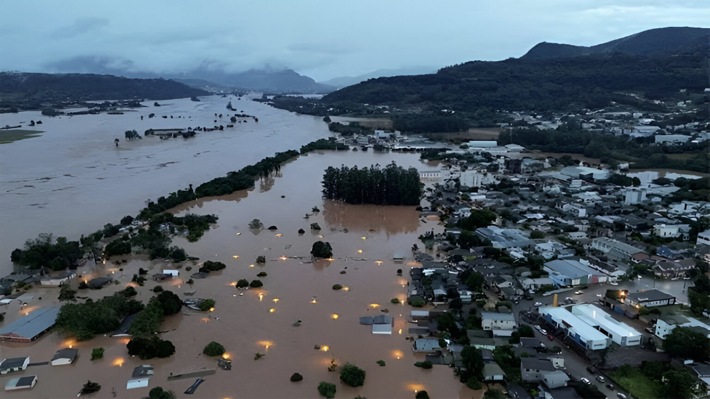
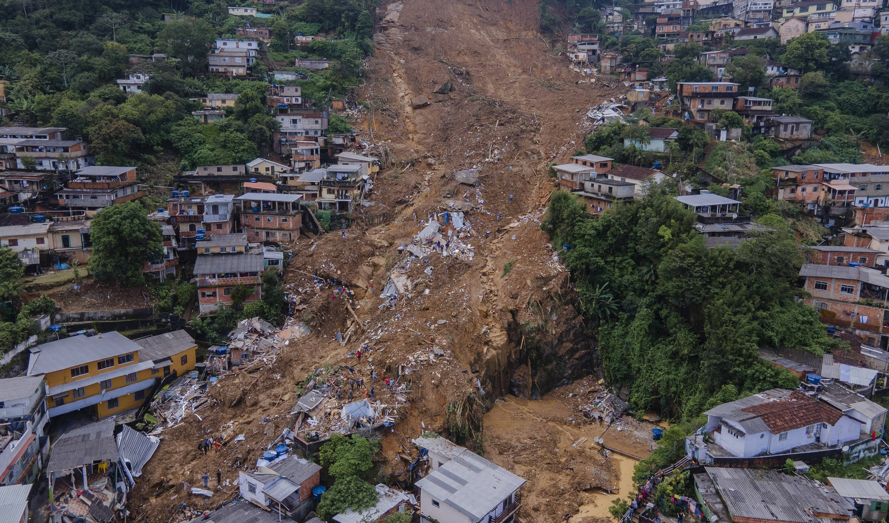

Pharos
Luz no seu caminho, segurança em sua vida.
Pharos: Inspirado pela Vida, Movido pela Proteção
Em um país de natureza exuberante, mas também vulnerável a desastres recorrentes, estar preparado é mais do que uma escolha, é uma necessidade. O Pharos nasceu para ser esse guia seguro, iluminando caminhos quando tudo parece incerto. Inspirado nos antigos faróis, sua missão é transmitir segurança, clareza e direção para indivíduos, comunidades, organizações e governos.
Comprometido com a Agenda 2030 da ONU e contribuindo para o Objetivo de Desenvolvimento Sustentável 13 (Ação contra a mudança global do clima), o Pharos reforça a importância da preparação e da resposta eficaz em tempos de crise.
O Pharos é um aplicativo completo, que oferece alertas em tempo real, instruções práticas e mapas interativos com áreas de risco, rotas seguras e abrigos próximos. Ele conecta cidadãos, equipes de resgate e autoridades em uma única plataforma ágil e confiável.
Tragédias recentes, como as enchentes no Rio Grande do Sul em 2024 e os deslizamentos em Petrópolis em 2022, evidenciam a urgência de soluções eficazes. O Pharos foi desenvolvido para atender a todos que desejam se proteger e proteger quem está à sua volta, fortalecendo a resiliência e salvando vidas.
1 em cada 3 municípios brasileiros declarou emergência por desastres naturais nos últimos cinco anos, segundo o IBGE.
Mais que um aplicativo, o Pharos é um compromisso com a vida, a esperança de que, mesmo nas maiores tempestades, podemos encontrar luz e direção.
Pharos. Prepare-se. Responda. Recupere. Sempre em frente.

Enchentes no Rio Grande do Sul (2024)

Deslizamentos em Petrópolis/RJ (2022)
Conheça o Pharos
Veja como o Pharos funciona na prática. Nosso aplicativo integra dados meteorológicos, geográficos e alertas da Defesa Civil para oferecer informações cruciais em tempo real.
(Demonstração baseada em protótipo interativo do Figma)
- Alertas Personalizados por Localização
- Mapas de Risco Interativos
- Rede de Apoio Comunitária
- Informações de Segurança e Rotas de Fuga
O Diferencial do Pharos
Em um cenário com diversas fontes de informação, o Pharos se destaca por sua abordagem integrada, facilidade de uso e foco na segurança do usuário.
| Critério | Pharos | Outras Soluções |
|---|---|---|
| Alertas em Tempo Real Personalizados | ✔️ | ✔️ |
| Mapas Interativos (Risco, Rotas, Abrigos) | ✔️ | Limitado / Ausente |
| Integração Oficial (Defesa Civil) | ✔️ | Parcial / Nenhuma |
| Rede de Apoio Comunitário | ✔️ | ❌ |
| Sistema de Verificação de Usuários (Resgate) | ✔️ | ❌ |
| Modo Offline (Parcial/Total) | ✔️ | Limitado / Ausente |
| Conteúdo Educativo e Preventivo | ✔️ | ❌ |
| Centralização de Funções (Alertas, Mapas, Fóruns) | ✔️ | Funções Separadas |
| Foco em Mobilização Comunitária | ✔️ | ❌ |
Nossos Planos: Proteção para Todos
O Pharos é uma solução pensada para atender diversos públicos, com funcionalidades adaptadas a diferentes realidades.
💡 Planos de Assinatura Pharos - Pessoais
❇️ Pharos Faísca
Gratuito
Acesso essencial à segurança comunitária.
- ✅ Alertas básicos em tempo real
- ✅ Mapa padrão da região atual
- ✅ Fórum local (bairro)
- ✅ Conteúdos educativos
- ✅ Previsão do tempo simples
✨ Pharos Brilho
R$ 6,90/mês
ou R$ 69,00 ao ano (economize 16%)
Ferramentas práticas para o dia a dia e emergências leves.
- Inclui tudo do plano Faísca, mais:
- ✅ Notificações climáticas específicas
- ✅ Fórum regional (cidade)
- ✅ Botão de emergência integrado
- ✅ Modo offline parcial (rotas salvas)
🔥 Pharos Chama
R$ 12,90/mês
ou R$ 119,00 ao ano (economize 23%)
Mais recursos para preparação e resposta eficiente.
- Inclui tudo do plano Brilho, mais:
- ✅ Alertas prioritários com personalização
- ✅ Mapas detalhados e com histórico de risco
- ✅ Relatórios personalizados por localização
- ✅ Fórum por temas (segurança, clima, trânsito etc.)
- ✅ Comunicação com autoridades verificadas
- ✅ Calendário de eventos comunitários
- ✅ Rotas inteligentes (alertas e abrigos)
- ✅ Suporte técnico melhorado
🚨 Pharos Farol
R$ 24,90/mês
ou R$ 229,00 ao ano (economize 23%)
Proteção total com funcionalidades exclusivas.
- Inclui tudo do plano Chama, mais:
- ✅ Modo offline total (dados pré-carregados)
- ✅ Fórum privado/familiar (contatos verificados)
- ✅ Mapa de outras cidades (planejamento de viagem)
- ✅ Relatórios semanais de risco ambiental
- ✅ Notificações preditivas (inteligência de dados)
- ✅ Assistente virtual de emergência
- ✅ Canal prioritário para resgate
- ✅ Descontos em kits de emergência (parcerias)
- ✅ Descontos em Seguro emergencial integrado
🏢 Planos Institucionais – Pharos
🟠 Pharos ONG
Gratuito
Acesso essencial para atuação em campo (com limitações).
- ✅ Alertas em tempo real na região
- ✅ Fórum comunitário aberto
- ✅ Mapa interativo (rotas básicas)
- ✅ Visualização de pontos de apoio
- ❗ Limite de acessos simultâneos
- ❗ Sem painel de controle
🔵 Pharos ONG Plus
R$ 9,90/mês
Ferramentas avançadas para resposta humanitária.
- ✅ Tudo do Pharos ONG, mais:
- ✅ Coordenação de voluntários
- ✅ Relatórios de campo (app)
- ✅ Painel de monitoramento simplificado
- ✅ Integração com mapas de risco oficiais
- ✅ Canal direto com Defesa Civil local
🟢 Pharos Business
R$ 39,90/mês
(personalizável)
Gestão de risco e preparo para empresas.
- ✅ Dashboards personalizados (risco)
- ✅ Alertas geolocalizados (áreas)
- ✅ Plano de evacuação interno
- ✅ Módulos de capacitação
- ✅ Acesso à central de dados
- ✅ Suporte especializado
🟣 Pharos GOV
Sob Consulta
Para Prefeituras e Órgãos Públicos.
- ✅ Emissão de alertas oficiais
- ✅ Monitoramento regionalizado
- ✅ Painel estratégico (ocorrências)
- ✅ Relatórios de risco e planos de ação
- ✅ Cadastro e acompanhamento de socorro
- ✅ Canal com lideranças e ONGs
- ✅ Integração com sistemas públicos (API)
- ✅ Módulo de comunicação emergencial
Nossa Visão de Futuro
Acreditamos no poder da informação e da tecnologia para construir comunidades mais resilientes. Nosso objetivo é expandir o Pharos nacionalmente, promovendo educação preventiva, fortalecendo comunidades vulneráveis e integrando redes locais de apoio em situações de risco.
Alcance Ampliado
+100.000 usuários em áreas de risco nos próximos 2 anos.
Expansão Nacional
Presença em pelo menos 5 novos estados prioritários.
Parcerias Estratégicas
Integração com Defesa Civil, prefeituras, universidades e ONGs.
Estratégia de Adesão
Campanhas educativas, articulação local, testes-piloto e engajamento comunitário.
Nosso Time
Estudantes do Senac dedicados a criar soluções inovadoras com impacto social.
Alexandre Leite
Arquiteto de Solução Web & Coordenador de Casos de Uso
Isadora Marcondes
UI/UX Designer & Produtora de Vídeo Promocional
João Damasqui
Analista de Qualidade UML & Apoio à Apresentação
Livia Cavalcanti
Desenvolvedora Front‐end & Gerente de Projeto
Lukas Mello
Engenheiro de Modelagem UML & Designer de Telas
Natani Moraes
Coordenadora de Pitch & Estruturação da Empresa
Raica Freitas
Apresentadora & Pesquisadora de Sustentabilidade